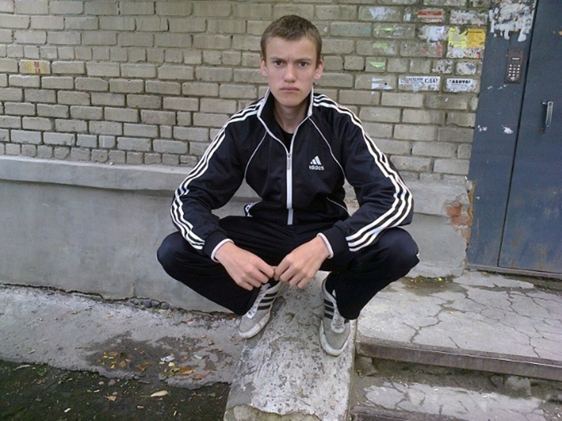

тут вёрстка макета из фигмы
Зачем нужно чаще сидеть на корточках
и почему мы почти перестали это делать

Предубеждение не единственная причина, которая мешает нам принимать полезную для организма позу.
Мы всё время сидим: за обеденным и рабочим столом, по пути на работу и обратно, в кресле с книгой и на диване перед телевизором. И лишь иногда тратим время на дорогу от одного стула к другому и на короткие занятия спортом. Даже если вы достаточно тренируетесь, но при этом подолгу остаётесь в сидячем положении, вы всё равно рискуете получить проблемы со здоровьем и умереть раньше.
Но есть и хорошие новости: мы можем уменьшить вред от такого образа жизни, если будем почаще опускаться на корточки. Это хорошо не только для суставов, но и для организма в целом.
Как поза на корточках влияет на здоровье
В своей книге «Мышцы и меридианы. Манипуляция формой» (Muscles and Meridians: The Manipulation of Shape) новозеландский остеопат Филип Бич сформулировал теорию архетипических поз. Её суть в том, что существуют первичные положения, которые наши предки принимали ещё два с половиной миллиона лет назад. И они не просто полезны. Само наше тело устроено так, чтобы человек мог долго находиться в определённой позе без вреда для организма. В том числе — сидеть на корточках, по‑турецки или по‑японски (на коленях с опорой на пятки).
Научных исследований, подтверждающих теорию архетипических поз, нет. Но их пользу медицина не отрицает.
Всё сводится к простому принципу «используй или потеряешь». В каждом нашем суставе есть синовиальная жидкость. Она как смазка, которая питает хрящи. Чтобы жидкость вырабатывалась, нужны две вещи: движение и сжатие. Если сустав не двигается в полном диапазоне, например, тазобедренные и коленные суставы никогда не сгибаются больше чем на 90 градусов, организм считает, что его не используют — и перестаёт производить синовиальную жидкость.
Другими словами, если вы хотите сохранять подвижность суставов и гибкость как можно дольше, чаще сгибайте колени по полной. Например, садитесь на корточки. Исследования также подтверждают положительное влияние такой позиции на перистальтику Implementation of a Defecation Posture Modification Device кишечника.
Здоровая опорно‑двигательная система не только делает нас гибкими и проворными, она влияет на продолжительность жизни.
Врачи из Бразилии и США пришли к выводу, что гибкость, сила мышц и умение держать баланс важны для долгой здоровой жизни. Они просили участников исследования сесть на пол, а затем подняться удобным способом. Наблюдения Ability to sit and rise from the floor as a predictor of all‑cause mortality за пациентами в возрасте от 51 года до 80 лет показали, что у тех, кто встаёт с лёгкостью, вероятная продолжительность жизни на три года больше, чем у тех, кто не может подняться без опоры.
Что мешает нам сидеть на корточках?
Одна из возможных причин, почему вставать без поддержки становится тяжело, заключается в том, что с возрастом мы всё реже садимся на корточки. Хотя глубокий присед — это форма активного отдыха, которая была неотъемлемой частью нашего прошлого. Мы просто забыли, как садиться, чтобы было удобно, и утратили навык вставать без усилий.
Другое объяснение связано с эволюцией туалетов. Когда на смену ямам в земле пришли ночные горшки и прообразы унитазов, отпала необходимость опускаться на корточки. Сейчас нам физически тяжело находиться в подобном положении, и поэтому мы его избегаем.
Почаще принимать полезную позу мешают и другие блага цивилизации. Сидеть так в офисе может быть крайне полезно для тазобедренных суставов, но гардероб современного человека, не говоря уже о деловом этикете, делают это невозможным. Редкий случай, когда мы живо представляем политика или топ‑менеджера в костюме на корточках, это постановочная фотография с милыми детишками. При этом люди, сидящие в таком же положении на тротуаре, чаще всего вызывают у нас желание поскорее пройти мимо.
Эта поза считается примитивной и ассоциируется с низким социальным статусом. Мы сразу представляем индийских крестьян или африканских кочевников, вспоминаем антисанитарию на городских улицах.
И хотя нам это может казаться некомфортным и недостойным, множество людей на планете по‑прежнему принимают такую позу, чтобы отдохнуть, помолиться, приготовить еду или сходить в туалет. В странах, где не хватает больниц, женщины по‑прежнему рожают в этой позиции. Маленькие дети по всему миру, когда учатся ходить, плюхаются на корточки – и легко встают, чтобы идти дальше.
Как часто нужно сидеть на корточках
Не торопитесь прощаться со стульями, чтобы вернуться на «исконные» корточки. Тот же Филип Бич предупреждает: любая поза приводит к проблемам, если оставаться в ней слишком долго. Это подтверждают исследования Association of squatting with increased prevalence of radiographic tibiofemoral knee osteoarthritis: the Beijing Osteoarthritis Study в Китае и США: у тех, кто часами сидит на корточках, чаще болят колени и развивается остеоартрит — повреждение различных тканей суставов. Если в обычной жизни вы так не делаете, смело садитесь на корточки почаще. Это принесёт только пользу.